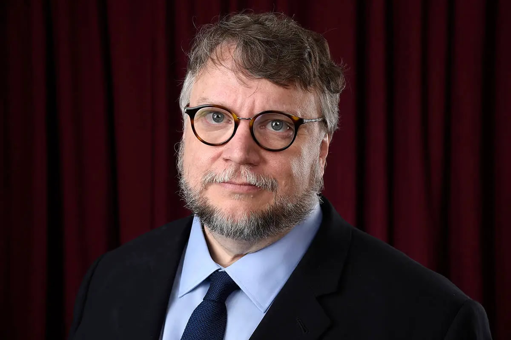

Guillermo del Toro nació el 9 de Octubre de 1964 en Guadalajara Jalisco, es uno de los cineastas más prestigiosos y singulares, es un reconocido director de cine, guionista y productor mexicano. Su comienzo en 1993 con la película "Cronos", y desde entonces ha dirigido una variedad de películas que crean mundos fantásticos y oscuros. Ha recibido numerosos premios y reconocimientos por su trabajo, 3 premios Oscar.
Ganador de 3 Premios Oscar. Premio Oscar a la Mejor Película 2018 y Premio Oscar al Mejor Director 2018, por la Película La Forma del Agua y Ganador de su tercer Premio Oscar a la Mejor Película de Animación 2023 por la Película Pinocchio.
Guillermo del Toro ha recibido numerosos reconocimientos y premios por su trabajo en el cine desde el premio Goya varias veces el premio Ariel. Es acreedor del Globo de Oro y muchos premios y galardones más sumando asi un total de 52 premios y galardones a lo largo de su Carrera.
Padres: Federico del Toro y Guadalupe Gomez
fue criado en el seno de una estricta familia católica. En 1998 su padre fue secuestrado en México; tras conseguir su liberacion
mediante el pago de su rescate, decidió mudarse al extranjero.
Casado inicialmente con Lorena Newton, con quien estuvo casado durante 20 años y tuvo dos Hijas: Marisa y Mariana. Sin
embargo en 2017 se divorciaron después de 31 años de relación.
Actualmente está casado con Kim Morgan, una guionista, escritora y periodista con quien se caso en secreto en 2021.
Estudió en el Centro de Investigación y Estudios Cinematográficos en Guadalajara, donde se graduo en 1983.
Pasó 10 años en diseño de maquillaje y formó su propia compañía, Necropia, antes de ser productor ejecutivo de su primer
filme a los 21 años
Fue Cofundador del Festival de Cine de Guadalajara y creó una compañía de producción, Tequila Gang.
por imprimir una estética y ambientación espectaculares a sus películas, creando ambientes tétricos
mágicos y fantásticos. Desde muy joven produjo y dirigió programas para la televisión Mexicana.
De sus películas, creó Cronos (1993)
Mimic (1997)
El espinazo del Diablo (2001)
Hellboy (2004) y Hellboy II El ejército dorado (2008)
El laberinto del Fauno (2006)
Y de las más recientes y reconocidas
La Forma del Agua (2017) ganadora de 2 premios Oscar
Pinocho de Guillermo del Toro (2022) ganadora de un Premio Oscar
Entre muchos más proyectos. Siendo estos de los más destacados.
Autor de la pagina: Luis Morales Perez